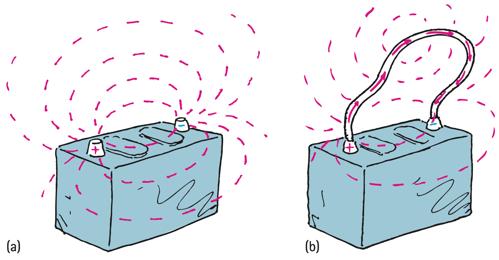
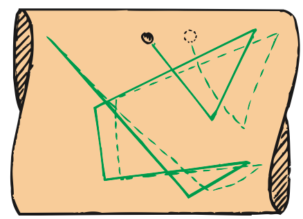

Speed and Source of Electrons in a Circuit
When we flip the light switch on a wall and the circuit is completed, either ac or dc, the lamp appears to glow immediately. Current is established through the wires at nearly the speed of light. It is not the electrons that move at this speed.6 Although electrons inside metal at room temperature have an average speed of a few million kilometers per hour, they make no current because they are moving in all possible directions. There is no net flow in any preferred direction. But, when a battery or generator is connected, an electric field is established inside the conductor. The electrons continue their random motions while simultaneously being nudged by this field. It is the electric field that can travel through a circuit at nearly the speed of light. The conducting wire acts as a guide or “pipe” for electric field lines (Figure 23.13). In the space outside the wire, the electric field has a pattern determined by the location of the electric charges, including some charges that accumulate on the surface of the wire. Inside the wire, the electric field is directed along the wire.

If the voltage source is dc, like the battery shown in Figure 23.13, the electric field lines are maintained in one direction in the conductor. Conduction electrons are accelerated by the field in a direction parallel to the field lines. Before they gain appreciable speed, they “bump into” the anchored metallic ions in their paths and transfer some of their kinetic energy to them. This is why current-carrying wires become hot. These collisions interrupt the motion of the electrons, so the speed at which they migrate along a wire is extremely low. This net flow of electrons is the drift velocity. In a typical dc circuit—the electrical system of an automobile, for example—electrons have a drift velocity that averages about a hundredth of a centimeter per second. At this rate, it would take about 3 hours for an electron to travel through 1 meter of wire! Large currents are possible because of large numbers of flowing electrons. So, although an electrical signal travels at nearly the speed of light in a wire, the electrons that move in response to this signal actually travel slower than a snail’s pace.

In an ac circuit, the conduction electrons don’t progress along the wire at all. They oscillate rhythmically to and fro about relatively fixed positions. When you talk to your friend on a conventional land telephone, it is the pattern of oscillating motion that is transmitted across town at nearly the speed of light. The electrons already in the wires vibrate to the rhythm of the traveling pattern.
A common misconception regarding electric currents is that the current is propagated through the conducting wires by electrons bumping into one another—that an electrical pulse is transmitted in a manner similar to the way the pulse of a tipped domino is transferred along a row of closely spaced standing dominoes. This simply isn’t true. The domino idea is a good model for the transmission of sound, but not for the transmission of electric energy. Electrons that are free to move in a conductor are accelerated by the electric field impressed upon them, not because they bump into one another. True, they do bump into one another and other atoms, but this slows them down and offers resistance to their motion. Electrons throughout the entire closed path of a circuit all react simultaneously to the electric field.
Another common misconception about electricity is the source of electrons. In a hardware store, you can buy a water hose that is empty of water. But you can’t buy a piece of wire, an “electron pipe,” that is empty of electrons. The source of electrons in a circuit is the conducting circuit material itself. Some people think that the electrical outlets in the walls of their homes are a source of electrons. They incorrectly assume that electrons flow from the power utility through the power lines and into the wall outlets of their homes. This assumption is false. The outlets in homes are ac. Electrons make no net migration through a wire in an ac circuit.
When you plug a lamp into an outlet, energy flows from the outlet into the lamp, not electrons. Energy is carried by the pulsating electric field and causes vibratory motion of the electrons that already exist in the lamp filament. If a voltage of 120 V is impressed on a lamp, then an average of 120 J of energy is dissipated by each coulomb of charge that is made to vibrate. Most of this electric energy appears as heat, while some transforms to light. Power utilities do not sell electrons. They sell energy. You supply the electrons.
So, when you are jolted by an electric shock, the electrons that make up the current in your body originate in your body. Electrons do not emerge from the wire and pass through your body and into the ground; energy does. The energy simply causes free electrons already existing in your body to vibrate in unison. Small vibrations tingle; large vibrations can be fatal.